2022年北京市中考物理试题 原卷解析
2022年北京市初中学业水平考试物理试卷
1. 本试卷共8页，共两部分，共26题，满分70分。考试时间70分钟。
2. 在试卷和草稿纸上准确填写姓名、准考证号、考场号和座位号。
3. 试题答案一律填涂或书写在答题卡上，在试卷上作答无效。
4. 在答题卡上，选择题、作图题用2B铅笔作答，其他试题用黑色字迹签字笔作答。
5. 考试结束，将本试卷、答题卡和草稿纸一并交回。第一部分
一、单项选择题（下列每题均有四个选项，其中只有一个选项符合题意。共24分，每题2分）
1. 如图所示，用毛皮摩擦过的橡胶棒接触验电器的金属球时，金属球验电器的两片金属箔之所以张开是由于（ ）

A. 同种电荷相互排斥B. 异种电荷相互吸引
C. 同种电荷相互吸引D. 异种电荷相互排斥
【答案】A
【解析】
【详解】用毛皮摩擦过的橡胶棒带负电，故用它去接触验电器的金属球时，验电器也带上负电，即验电器的金属球和两个金属箔片上都带上了负电，由于同种电荷相互排斥，故其两个金属箔片会张开，故A符合题意，BCD不符合题意。
故选A。
2. 图所示的光现象中，由于光的折射形成的是（ ）
A.  日晷上呈现针的影子B.
日晷上呈现针的影子B.  景物在镜中成像
景物在镜中成像
C.  鸟巢在水中形成倒影D.
鸟巢在水中形成倒影D.  筷子好像在水面处弯折
筷子好像在水面处弯折
【答案】D
【解析】
【详解】A．影子的形成是由于光的直线传播，故A不符合题意；
B．景物在镜子中成的像是由于光的反射，故B不符合题意；
C．鸟巢在水中形成 倒影是由于光的反射，故C不符合题意；
倒影是由于光的反射，故C不符合题意；
D．筷子看起来弯折，是由于光从水中进入到空气中时，发生了折射，故D符合题意。
故选D。
3. 琴和瑟是我国传统的两种乐器，通过弹拨琴和瑟的弦使之发声。下列说法正确的是（ ）
A. 正在发声的琴弦，没有振动
B. 琴和瑟发出的声音，可以在真空中传播
C. 琴和瑟发出的声音音调相同时，它们的响度一定相同
D. 人们依据音色的不同，能区分出琴和瑟的声音
【答案】D
【解析】
【详解】A．一切发声的物体都在振动，所以正在发声的琴弦，在振动，故A错误；
B．声音的传播需要介质，声音不能在真空中传播，故B错误；
C．音调与振动频率有关，响度与振幅有关，琴和瑟发出的声音音调相同时，只能说明它们振动频率一样，但不能说明响度相同，故C错误；
D．琴和瑟材料与结构不同，发出声音的音色不同，所以可以根据音色来分出琴和瑟，故D正确。
故选D。
4. 图所示的物态变化实例中，由于熔化形成的是（ ）
A.  立春时节冰化成的水B.
立春时节冰化成的水B.  白露时节草叶上的露珠
白露时节草叶上的露珠
C.  霜降时节枝头上的霜D.
霜降时节枝头上的霜D.  冬至时节房檐上的冰挂
冬至时节房檐上的冰挂
【答案】A
【解析】
【详解】A．冰化成的水，固态变为液态，发生的是熔化现象，故A符合题意；
B．露珠是水蒸气遇冷液化形成的液体，故B不符合题意；
C．霜是水蒸气遇冷凝华形成的固体，故C不符合题意；
D．冰挂是水蒸气遇冷凝华形成的固体，故D不符合题意。
故选A。
5. 图所示的电路中，电阻阻值R1<R2。开关S闭合后，R1、R2两端的电压分别为U1、U2，通过R1、R2的电流分别为I1、I2。下列判断正确的是（ ）

A. U1>U2B. U1<U2C. I1>I2D. I1=I2
【答案】C
【解析】
【详解】AB．由图可知，两电阻并联，根据并联电路电压特点可知，U1=U2，故AB错误；
CD．两电阻两端的电压相等，I1R1=I2R2，由于R1<R2，所以I1>I2，故C正确，D错误。
故选C。
6. 图所示的是神舟十三号载人飞船返回舱返回地面时的情境。打开降落伞后，若返回舱在一段时间内的运动可看作是竖直向下的匀速运动，则关于返回舱在这段时间内，下列说法正确的是（ ）

A. 返回舱的动能不变B. 返回舱的重力势能不变
C. 返回舱的机械能不变D. 返回舱所受重力不做功
【答案】A
【解析】
【详解】A．因为返回舱是匀速运动，且质量未改变，所以返回舱的动能不变，故A正确；
B．返回舱质量未变，但其高度在不断减小，所以返回舱的重力势能变小，故B错误；
C．机械能等于动能和势能之和，动能不变，势能减小，所以机械能减小，故C错误；
D．重力竖直向下，返回舱在重力的方向上移动了距离，所以返回舱所受重力做功，故D错误。
故选A。
7. 小京通过焦距为10cm的凸透镜看到了提示牌上“关灯”两字放大的像，如图所示。下列说法正确的是（ ）

A. “关灯”两字放大的像是实像
B. 提示牌上“关灯”两字在凸透镜的焦点上
C. 提示牌上“关灯”两字到凸透镜的距离小于10cm
D. 提示牌上“关灯”两字到凸透镜的距离大于20cm
【答案】C
【解析】
【详解】由图可知，像是正立的，所以成正立放大的虚像，由凸透镜成像规律可知，当物距小于一倍焦距时，成正立放大的虚像，由于该凸透镜焦距为10cm，所以提示牌上“关灯”两字到凸透镜的距离小于10cm，故ABD错误，C正确。
故选C。
8. 图所示的是我国运动员在北京冬奥会上参加冰壶比赛时的情境。下列说法正确的是（ ）

A. 运动员推动冰壶滑行，以冰面为参照物冰壶是静止的
B. 掷出后的冰壶能继续运动，是由于冰壶具有惯性
C. 掷出后的冰壶继续运动时，冰壶受到手的推力
D. 冰壶运动越来越慢的过程中，冰壶的运动状态不变
【答案】B
【解析】
【详解】A．运动员推动冰壶滑行，以冰面为参照物，冰壶与冰面的位置在变化，所以冰壶是运动的，故A错误；
B．掷出后的冰壶是运动的，由于冰壶具有惯性，仍能保持原来的运动状态，继续向前运动，故B正确；
C．推力本质是弹力，弹力发生在两个接触的物体之间，掷出后的冰壶与手没有接触，所以冰壶不受手的推力，故C错误；
D．冰壶运动越来越慢，运动状态在改变，故D错误。
故选B。
9. 小京在探究影响滑动摩擦力大小的因素时，用弹簧测力计水平拉动木块沿水平木板做匀速直线运动，如图甲所示；将铁块放在木块上，再次用弹簧测力计水平拉动木块，使木块和铁块沿同一水平木板做匀速直线运动，如图乙所示。下列说法正确的是（ ）

A. 图甲所示实验中，弹簧测力计的示数小于滑动摩擦力的大小
B. 图乙所示实验中，木板受到的压力等于木块受到的重力
C. 甲、乙两次实验，探究的是滑动摩擦力的大小与压力是否有关
D. 甲、乙两次实验，探究的是滑动摩擦力的大小与接触面的粗糙程度是否有关
【答案】C
【解析】
【详解】A．图甲所示实验中，弹簧测力计水平拉动木块做匀速直线运动，此时木块处于平衡状态，由二力平衡可知，弹簧测力计的示数等于滑动摩擦力的大小，故A错误；
B．图乙所示实验中，将铁块放在木块上，所以木板受到的压力等于木块的重力和铁块的重力之和，故B错误；
CD．将铁块放在木块上，增大了木块对木板的压力，控制木块与木板间的接触面粗糙程度不变，所以探究的是滑动摩擦力的大小与压力是否有关，故C正确，D错误。
故选C
10. 如图所示的实验中能说明发电机工作原理的是（ ）
A.  磁极间有相互作用
磁极间有相互作用
B.  通电导线周围存在磁场
通电导线周围存在磁场
C.  通电导体在磁场中受力
通电导体在磁场中受力
D.  电磁感应现象
电磁感应现象
【答案】D
【解析】
【详解】A．磁极之间的相互作用是同极相互排斥，异极相互吸引，并不能说明发电机的工作原理，故A不符合题意；
B．通电导体周围存在磁场是奥斯特实验，并不能说明发电机的工作原理，故B不符合题意；
C．通电导体在磁场中受力是电动机的工作原理，故C不符合题意；
D．电磁感应现象是发电机的工作原理。故D符合题意。
故选D。
11. 甲、乙、丙三个小球的质量m和体积V如下表所示，将它们浸没在水中释放，在其稳定后，三个小球所受的浮力分别为 、
、 和
和 。下列判断正确的是（ ）
。下列判断正确的是（ ）
小球 | 甲 | 乙 | 丙 |
m/g | 30 | 40 | 54 |
V/cm3 | 60 | 50 | 20 |
A.  B.
B. 
C.  D.
D. 
【答案】B
【解析】
【详解】由表格数据可知，甲球的密度为

乙球的密度为

丙球的密度为

由于甲球和乙球密度小于水的密度，所以甲球和乙球最终会漂浮在水面，甲球漂浮时，浮力为

乙球漂浮时，浮力为

由于丙球密度大于水的密度，所以丙球最终会沉底，由 可知，浮力为
可知，浮力为

综上所述，，故B正确，ACD错误。
故选B。
12. 如图所示，两个圆柱形容器甲和乙放在水平桌面上，甲容器底面积大于乙容器底面积，它们分别装有体积相等的液体，甲容器中液体的密度为 ，乙容器中液体的密度为
，乙容器中液体的密度为 。液体内A、B两点到容器底部的距离相等，其压强分别为
。液体内A、B两点到容器底部的距离相等，其压强分别为 、
、 。若两容器底部受到的液体压强相等，则下列判断正确的是（ ）
。若两容器底部受到的液体压强相等，则下列判断正确的是（ ）

A.  B.
B. 
C.  D.
D. 
【答案】D
【解析】
【详解】由于两容器底部受到的液体压强相等，甲容器底面积大于乙容器底面积，由 可知，甲容器底部受到的液体压力F甲大于乙容器底部受到的液体压力F乙，由于
可知，甲容器底部受到的液体压力F甲大于乙容器底部受到的液体压力F乙，由于
G甲液=F甲
G乙液=F乙
所以
G甲液>G乙液
由G=mg可知
m甲液>m乙液
由于甲乙两种液体的体积相等，由 可知
可知
 甲>乙
甲>乙
由于A点到容器底部的深度等于B点到容器底部的深度，则两点以下部分液体的压强大小关系为
pA下>pB下
若两容器底部受到的液体压强相等，则两点处受到液体的大小关系为

故ABC错误，故D正确。
故选D。
二、多项选择题（下列每题均有四个选项，其中符合题意的选项均多于一个。共6分，每题2分。每题选项全选对的得2分，选对但不全的得1分，有错选的不得分）
13. 下列说法正确的是（ ）
A. 沿海地区通常比内陆地区昼夜温差小，原因之一是水的比热容比沙石的比热容大
B. 冬天双手互搓，手的温度升高，是通过热传递的方式改变手的内能
C. 长时间紧压在一起的铅片和金片互相渗入，是由于发生了扩散现象
D. 汽油机的做功冲程中，燃气对外做功，将内能转化为机械能
【答案】ACD
【解析】
【详解】A．水的比热容比砂石的比热容大，相同质量的水和沙石吸收或放出相同热量时，根据

可知，水的温度变化小于沙石的温度的温度变化，故沿海地区比内陆地区昼夜温差小，故A正确；
B．冬天双手互搓，双手摩擦做功，手的内能增加，温度升高，故B错误；
C．长时间紧压在一起的铅片和金片互相渗入，是因为物体内部的分子不停的做无规则运动进入了对方内部，属于扩散现象，故C正确；
D．汽油机的做功冲程中，燃气燃烧释放内能，推动活塞做功，内能转化为机械能，故D正确。
故选ACD。
14. 额定电压相同的电热水壶、电烤箱和电饭锅正常工作过程中消耗的电能W和通电时间t的关系如图所示。关于这三个用电器，下列判断正确的是（ ）

A. 正常工作时，电热水壶比电烤箱产生的热量少
B. 正常工作时，电热水壶比电饭锅的功率大
C. 正常工作时，通过电饭锅的电流最小
D. 在一个月内，电热水壶消耗的电能一定最多
【答案】BC
【解析】
【详解】A．正常工作时，若工作相同时间，电热水壶比电烤箱消耗的电能多，则电热水壶比电烤箱产生的热量多，故A错误；
B．正常工作时，相同时间内，电热水壶比电饭锅消耗的电能多，根据

可知，电热水壶的功率大于电饭锅的功率，故B正确；
C．正常工作时，用电器两端的电压相同，相同时间内，电饭锅消耗的电能最少，根据
W=UIt
可知，通过电饭锅的电流最小，故C正确；
D．工作相同时间，电热水壶消耗的电能最多，但是在一个月内，电热水壶工作的时间有可能较短，消耗的电能就不一定最多，故D错误。
故选BC。
15. 如图所示，工人站在水平台面上用滑轮组提货物。工人第一次竖直向上用200N的力拉绳子时，货物未离开水平地面；第二次竖直向上拉动绳子，使货物以0.09m/s的速度匀速上升。已知工人体重为600N，货物重为900N，货物与地面的接触面积为 ，动滑轮重为100N。不计滑轮组的绳重和摩擦，下列说法正确的是（ ）
，动滑轮重为100N。不计滑轮组的绳重和摩擦，下列说法正确的是（ ）

A. 第一次拉绳子时，工人对水平台面的压力为800N
B. 第一次拉绳子时，货物对地面的压强为4000Pa
C. 第二次拉绳子的过程中，该滑轮组的机械效率为90%
D. 第二次拉绳子的过程中，工人拉力的功率为81W
【答案】ABC
【解析】
【详解】A．工人第一次竖直向上用200N的力拉绳子时，绳子也在用200N的力竖直向下拉工人，所以工人对水平台面的压力为

故A正确；
B．由于滑轮组上承担重量的绳子股数n=3，每股绳子受到的拉力为200N，所以货物和动滑轮受到绳子的拉力为

由于动滑轮重为100N，所以货物受到的拉力为

由于货物重为900N，所以货物对地面的压力为

货物与地面的接触面积为，所以货物对地面的压强为

故B正确；
C．第二次拉绳子时，绳子自由端的拉力为

滑轮组的机械效率为

故C正确；
D．货物以0.09m/s的速度匀速上升，绳子移动的速度为

工人拉力的功率为

故D错误。
故选ABC。
第二部分
三、实验探究题（共28分，16题2分，17、19、20、22、23题各4分，18、21题各3分）
16. 如图所示，温度计示数为___________°C。
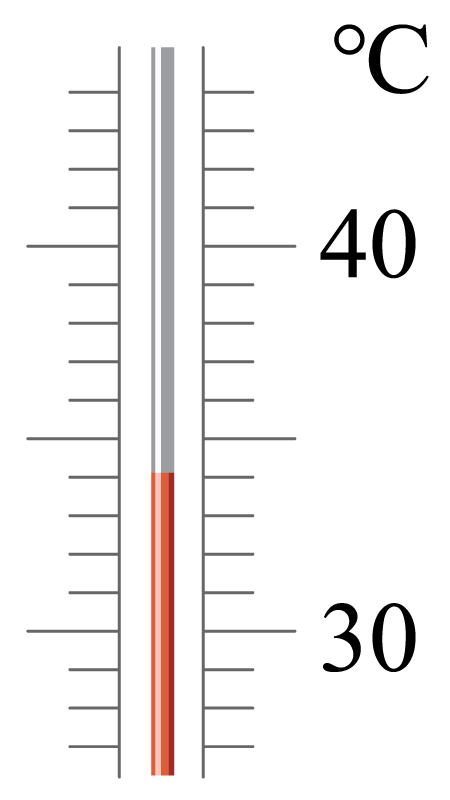
【答案】34
【解析】
【详解】由图可知，0℃在液柱的下方，温度计的分度值为1℃，液柱所在位置的示数为34℃。
17. 根据图中的电流方向，可知通电螺线管的___________端是N极。
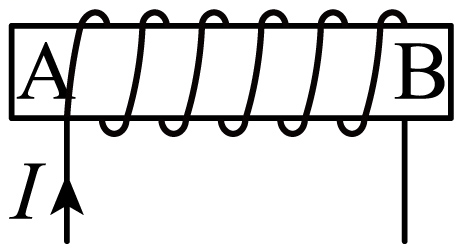
【答案】A
【解析】
【详解】电流从螺线管的左端流入，根据安培定则可知，螺线管的A端为N极。
18. 图所示的是北京冬奥会单板滑雪大跳台比赛中运动员在空中运动时的情境，此时他所受重力的方向是沿图中___________向下的方向。（选填“OA”“OB”或“OC”。其中，OA垂直于滑雪板，OB沿竖直方向，OC平行于滑雪板。）
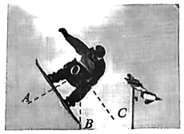
【答案】OB
【解析】
【详解】物体受到重力始终竖直向下，故运动员所受重力的方向是沿图中的OB的方向。
19. 小京利用如图所示的装置及相同高度的蜡烛等器材探究平玻璃板面镜成像特点，其中玻璃板和蜡烛竖直放置在水平桌面上，蜡烛的高度为6cm，蜡烛与玻璃板之间的距离为10cm。蜡烛通过玻璃板所成的像是___________像（选填“实”或“虚”），像的高度为___________cm，像到玻璃板的距离为___________cm。
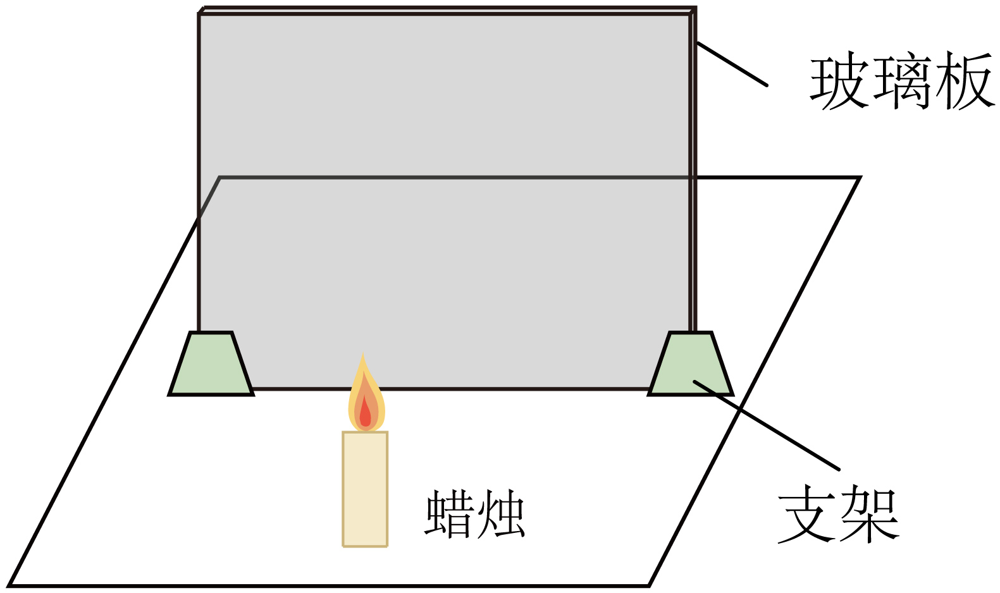
【答案】 ①. 虚 ②. 6 ③. 10
【解析】
【详解】[1][2][3]由平面镜所成特点可知，平面镜所成像是虚像，像与实物等大，像距等于物距，所以蜡烛通过玻璃板所成的像是虚像；蜡烛的高度为6cm，所以像的高度也为6cm；蜡烛与玻璃板之间的距离为10cm，所以像到玻璃板的距离也为10cm。
20. 小京用图甲所示的电路测量额定电压为2.5V小灯泡的额定功率。
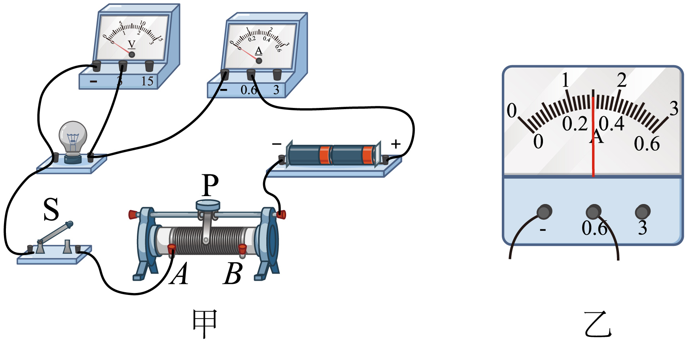
（1） 如图甲所示，闭合开关S前，应将滑动变阻器的滑片P移动至___________端；
（2） 闭合开关S后，移动滑动变阻器的滑片P，当电压表示数为2.5V时，电流表的示数如图乙所示，此时通过小灯泡的电流为___________A．该小灯泡的额定功率为___________W。
【答案】 ①. B ②. 0.3 ③. 0.75
【解析】
【详解】（1）[1]闭合开关前，为了防止因电路中电流过大而损坏电路元件，应将滑动变阻器的滑片P置于阻值最大处，如图甲所示，滑动变阻器接下端左端的接线柱，故滑片P移动至B端。
（2）[2][3]如乙图可知，电流表所选的量程是0~0.6A，分度值为0.02A，根据此时指针指示的位置可知读出电流表的读数为0.3A。即灯泡正常发光时流过灯泡的电流I=0.3A，则灯泡的额定功率为
P额=U额I=2.5V×0.3A=0.75W
21. 小京测量金属块的密度时，先将金属块放在调节好的天平上测量其质量，天平平衡后，右盘中所放砝码及游码在标尺上的位置如图甲所示，则金属块的质量为___________g。再将金属块用细线系好放进盛有40ml水的量筒中，量筒中的水面升高到如图乙所示的位置，则金属块的体积为___________
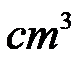
。该金属块的密度为___________g/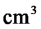
。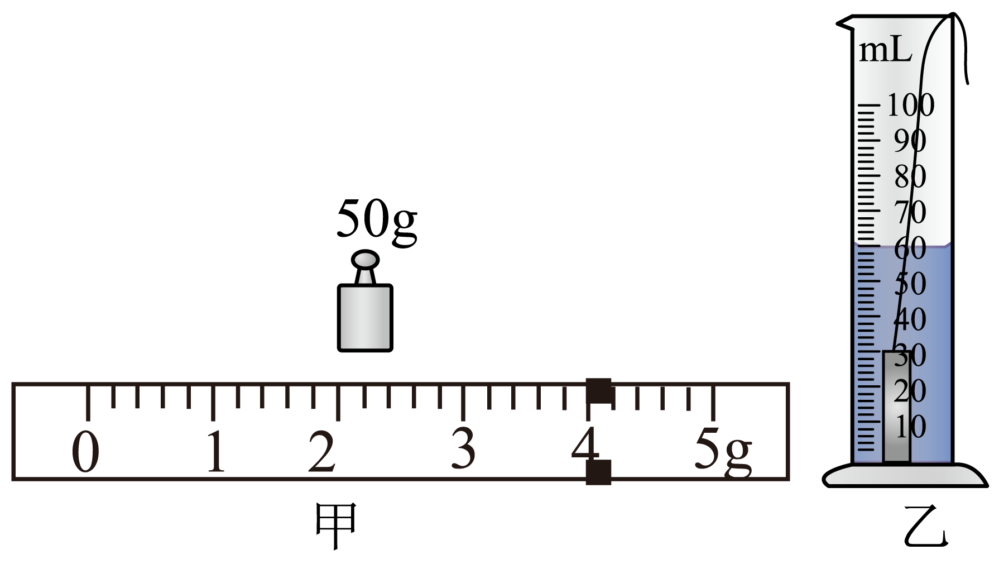
【答案】 ①. 54 ②. 20 ③. 2.7
【解析】
【详解】[1]砝码的质量为50g，游码对应的质量为4g，所以金属块的质量为
m=50g+4g=54g
[2]乙图中金属块和水的总体积为60mL，则金属块的体积为
V=60mL-40mL=20mL=20cm3
[3]金属块的密度为
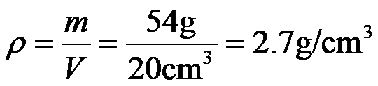
22. 小京为探究水沸腾前后温度随吸收热量变化的特点，进行了如下实验：用如图甲所示的装置给一定质量的水加热，当水温为90°C时，每隔一分钟记录一次水的温度，从计时开始，经5min水沸腾。水沸腾后持续加热一段时间，并记录水的温度。根据实验数据得到了水的温度随加热时间变化的关系图像，如图乙所示。
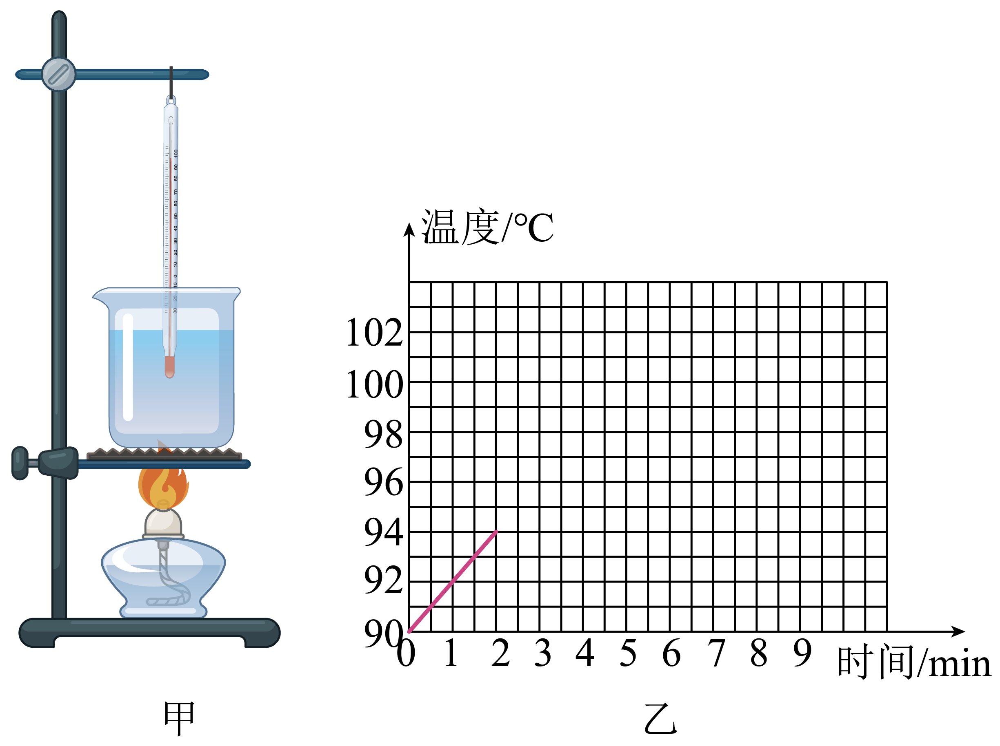
（1） 在此实验中，水吸收的热量是通过___________来反映的；
（2） 由图像可得出的实验结论：水在沸腾前，___________；水在沸腾过程中，___________。
【答案】 ①. 加热时间 ②. 吸收热量，温度升高 ③. 吸收热量，温度不变
【解析】
【详解】（1）[1]酒精燃烧时向水传递热量，相同的时间产生的热量是相同的，水吸收热量的多少，由加热时间决定。
（2）[2][3]由温度随时间变化的图像可知，水在沸腾前，一直吸收热量，温度不断升高；水在沸腾过程中，仍吸收热量，但温度保持不变。
23. 小京为了证明“浸没在水中的物体所受的浮力大小与水的深度有关”的观点是错误的，他利用符合实验要求的弹簧测力计、刻度尺、烧杯、水和金属块等器材进行实验。
（1） 以下是他的部分实验步骤，请帮他补充完整。
①将金属块悬挂在弹簧测力计下，测量金属块受到的重力G并记录；
②在烧杯中装入适量的水，___________，静止时记录弹簧测力计的示数F1，用刻度尺测量烧杯中水的深度h并记录；
③___________，静止时记录弹簧测力计的示数F2，用刻度尺测量烧杯中水的深度h并记录；
④用公式___________计算金属块所受浮力
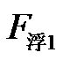
、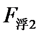
并记录。（2） 由水的深度变化时，___________（选填“=”或“≠”），就可以证明这种观点是错误的。
【答案】 ①. 将金属块浸没在水中且不接触烧杯 ②. 向烧杯中加水，将金属块浸没在水中且不接触烧杯 ③.
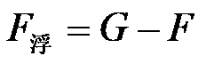
④. =【解析】
【详解】（1）②③④[1][2][3]为探究浸没在水中的物体所受的浮力大小与水的深度关系，步骤②③中金属块都应浸没在水中，只是前后两次浸没在水中的深度不同，所以步骤②在烧杯中装入适量的水，将金属块浸没在水中且不接触烧杯，记录弹簧测力计的示数F1，用刻度尺测量烧杯中水的深度h1，根据称重法可知，此时浮力为
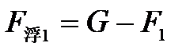
步骤③向烧杯中加水，将金属块浸没在水中且不接触烧杯，改变金属块浸没在水中的深度，记录弹簧测力计的示数F2，用刻度尺测量烧杯中水的深度h2，根据称重法可知，此时浮力为
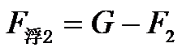
（2）[4]由
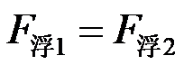
可知，金属块浸没在水中的不同深度时，金属块受到的浮力相同，说明浸没在水中的物体所受的浮力大小与水的深度无关，故可证明题干中“浸没在水中的物体所受的浮力大小与水的深度有关”的观点是错误的。24. 为研究热敏电阻 的阻值与温度的关系，小京按图所示的电路进行实验，其中电源两端电压U不变，
的阻值与温度的关系，小京按图所示的电路进行实验，其中电源两端电压U不变， 为定值电阻。实验中，他将已做防水处理的热敏电阻先后浸没在温度、
为定值电阻。实验中，他将已做防水处理的热敏电阻先后浸没在温度、
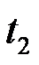
和的水中，闭合开关，分别读出对应电流表A的示数 、
、 和
和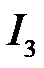
，发现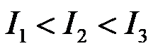
。已知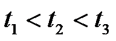
，请分析并说明热敏电阻的阻值与温度的关系。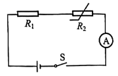
【答案】见解析
【解析】
【详解】电源两端电压U不变，为定值电阻，依据欧姆定律和串联电路特点，可得
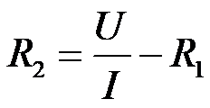
在的情况下
可得出热敏电阻的阻值逐渐变小，所以，热敏电阻的阻值随温度的升高而减小。
四、科普阅读题（共4分）
25. 请阅读《国之重器—综合极端条件实验装置》并回答题。
国之重器——综合极端条件实验装置
从人类第一次仰望星空，到试图用“中国天限”破译日月星辰等天文现象的奥秘，从探究万物组成到利用扫描隧道显微镜透视物质的微观结构，都得益于实验条件的拓展和技术手段的进步。
在宇宙中、高温、高压、强磁场等极端环境比比皆是，而我们地球上的生活环境是一个相对温和的环境，要发现更多的新现象，就需要建造极端条件实验室，拓展研究空间。
所谓极端条件，指的是在实验室中人为创造出来特别低的温度、特别强的磁场、特别高的压强等（如图所示）实验条件。通过创造极端条件，可以发现和揭示许多在通常条件下观察不到的奇异物质特性，例如某些物质在很低的温度时，电阻就变成了0（如铝在-271.76°C——即1.39K——以下时电阻为0），这就是超导现象。
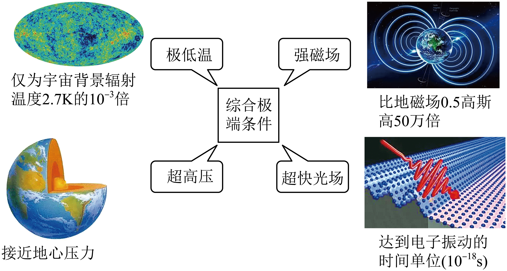
肩负原始创新重任的国之重器——国际首个综合极端条件实验装置布局在北京怀柔科学城，并已投入使用。该项目拥有极低温（可达1mK）、强磁场（可达32.35T）、超高压（可达 ）和超快光场（时间分辨率可达
）和超快光场（时间分辨率可达 s）极端条件实验装置。
s）极端条件实验装置。
科学家们将极端条件进行综合运用，大大拓展了物质科学的研究空间，为发现新物态、探索新现象、开辟新领域，创造了前所未有的机遇。
请根据上述材料，回答下列问题
（1） 请写出我国综合极端条件实验装置中的一个极端条件：___________。
（2） 我国自主研制的载人潜水器“奋斗者”号成功完成了10000m的深潜试验，创造了中国载人深潜的新纪录。超高压极端条件的压强约为“奋斗者”号在10000m深海中（海水密度取 ）承受压强的___________倍。（填写正确选项前的字母）
）承受压强的___________倍。（填写正确选项前的字母）
A. 4 B. 40 C. 4000 D.400000
（3） 强磁场的产生需要大电流，但电流越大，导线的温度就会越高，通常会导致铝导线等熔化，给强磁场的产生带来限制。依据文中信息，请写出应选择哪种极端条件，能减少电流通过导线所产生的热量，从而突破限制，创造强磁场极端条件，并写出选择依据。（ ）
【答案】 ①. 极低温 ②. C ③. 见详解
【解析】
【详解】（1）[1]由题可知，该项目拥有极低温（可达1mK）、强磁场（可达32.35T）、超高压（可达）和超快光场（时间分辨率可达s）极端条件实验装置。
（2）[2]“奋斗者”号在10000m深海中（海水密度取）承受压强为
p=ρgh=1.0×103kg/m3×10N/kg×10000m=1.0×107Pa
即
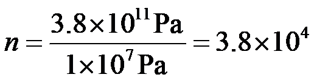
故ABD不符合题意，C符合题意。
故选C。
（3）[3]选择极低温极端条件。因为，铝等物质在极低温极端条件下可以出现超导现象，此种情况下导线的电阻为0，根据
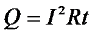
，电流通过导线产生的热量为0。这样就可以减小电流通过导线产生的热量，从而突破限制。26. 如图22所示的电路中，电源两端电压为6V并保持不变，电阻R1的阻值为10Ω。闭合开关S后，电压表的示数为2V。求：
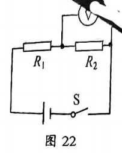
（1）电阻R2的阻值；
（2）电阻R1消耗电功率。
【答案】（1）5Ω；（2）1.6W
【解析】
【详解】解：（1）已知电源电压为U电源=6V，电阻R2两端的电压为U2=2V，则电阻R1两端的电压为
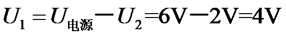
由于电阻R1和R2串联，电流处处相等，所以流过电阻R2的电流为
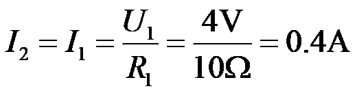
电阻R2的阻值为
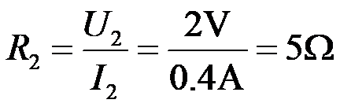
（2）电阻R1消耗的电功率
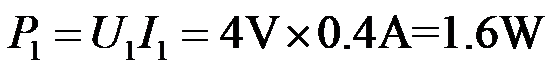
答：（1）电阻R2的阻值5Ω；
（2）电阻R1消耗的电功率1.6W。
27. 俯卧撑是一项常见的健身项目，采用不同的方式做俯卧撑，健身效果通常不同。图23甲所示的是小京在水平地面上做俯卧撑保持静止时的情境，他的身体与地面平行，可抽象成如图23乙所示的杠杆模型，地面对脚的力作用在O点，对手的力作用在B点，小京的重心在A点。已知小京的体重为750N，OA长为1m，OB长为1.5m。
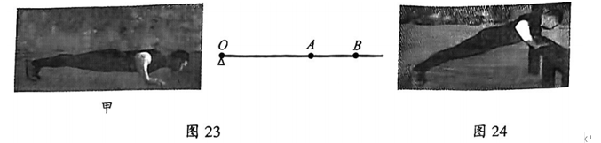
（1）图23乙中，地面对手的力F1与身体垂直，求F1的大小；
（2）图24所示的是小京手扶栏杆做俯卧撑保持静止时的情境，此时他的身体姿态与图23甲相同，只是身体与水平地面成一定角度，栏杆对手的力F2与他的身体垂直，且仍作用在B点。分析并说明F2与F1的大小关系。
【答案】（1）500N；（2）<
【解析】
【详解】解：（1）如图1所示，O为支点，重力的力臂为lA，F1的力臂为lB
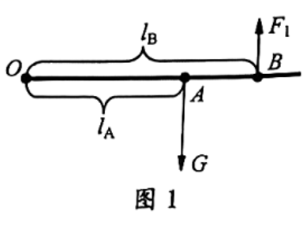
根据杠杆平衡条件
F1lB=GlA
可得
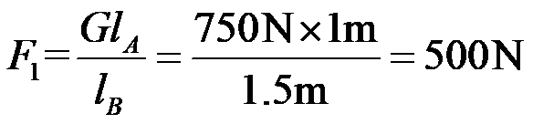
（2）小京手扶栏杆时抽象成的杠杆模型如图2所示，O为支点，重力的力臂为lA′，F2的力臂为lB
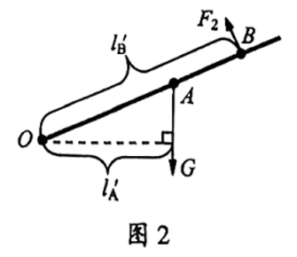
根据杠杆平衡条件
F2lB′=GlA′
可得
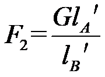
由图可知
lA′<lA，lB′=lB
所以
F2<F1